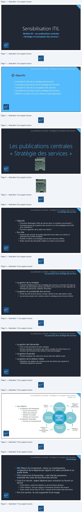
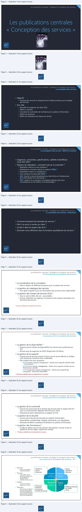
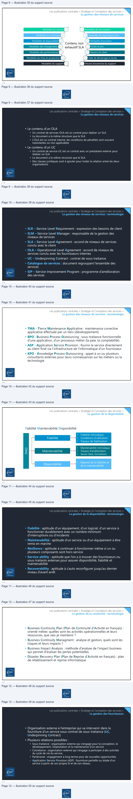
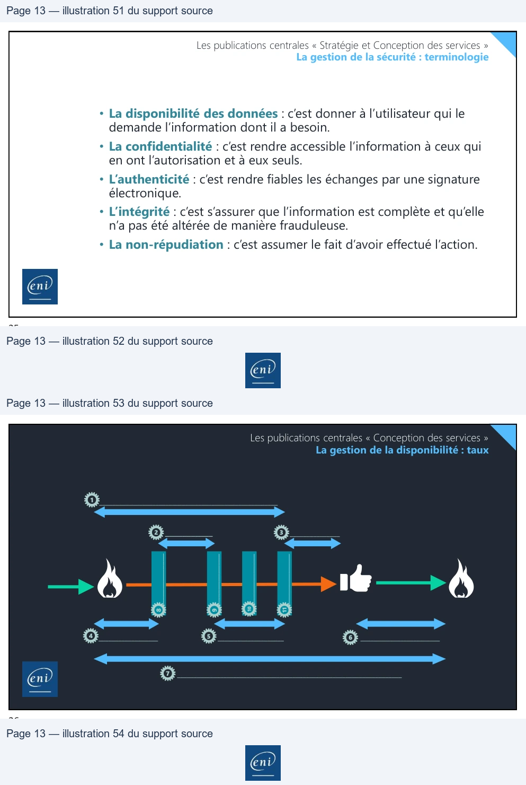

Transcription du document du Drive TSSR. La mise en forme est adaptée au Web ; les compléments IA du portail sont présentés séparément.
Module 03 – Les publications centrales
« Stratégie et Conception des services »
1
Les publications centrales « Stratégie et Conception des services »
Objectifs
• Connaitre le rôle de la stratégie des services
• Connaitre les processus de la stratégie des services
• Connaitre le rôle de la conception des services
• Connaitre les processus de la stratégie des services
• Définir le contenu d’un SLA (Service Level Agrement)
2
Les publications centrales « Stratégie et Conception des services »
3
Les publications centrales « Stratégie et Conception des services »
La stratégie des services
• Objectifs
• Comment développer l’offre de service dans un contexte concurrentiel ?
• Comment passer de la gestion des services à un rôle stratégique de la DSI
pour l’entreprise ?
• Comment apporter de la valeur aux clients ?
• Son rôle
• Produire des services de qualité apportant de la valeur aux clients en
prévoyant les conflits possibles
• Planifier et définir une stratégie des services (services offerts)
• Rester proche des demandes métiers en restant concurrentiel
4
>
à
End
Les publications centrales « Stratégie et Conception des services »
Les processus de la stratégie des services
• La gestion de la stratégie
• Il permet l’établissement de la stratégie des services en fonction de l’état du
marché, des demandes (clients), des offres (concurrence) et des capacités de
l’entreprise (personnel, matériel, financière)
• La gestion du portefeuille des services
• Il liste tous les services (futurs, actuels, retirés) et leur description (coût)
• Les services actuels sont contenus dans le catalogue des services (clients)
5
Les publications centrales « Stratégie et Conception des services »
Les processus de la stratégie des services
• La gestion des demandes
• C’est un des processus les plus critiques
• Permet d’analyser les besoins des clients, actuels et surtout futurs, en
fonction des évolutions des métiers et des technologies
• La gestion financière
• Permet d’analyser les coûts d’un service afin d’en définir le prix
• La gestion de la relation métier
• Maintient une relation de confiance avec les clients pour garantir la
satisfaction générale ressentie
6
N
>
Les publications centrales « Stratégie et Conception des services »
Les 4 « P »
Politiques et
Vision et
mission
éléments
différenciateurs
Positionnements
(Positions)
Stratégie
Perspective
(Perspective)
Plans
(Plans)
des
services
• Les acteurs
• La direction de l’entreprise
• Donner des directions
• Définir des politiques
• Identifier les projets
• Attribuer les ressources
• La direction financière
• Prioriser les investissements
Pérennisation
Décisions et
(Patterns)
Méthode et
exécution
actions
consistantes dans
la durée
7
Les publications centrales « Stratégie et Conception des services »
Terminologie
• ROI (Return On Investment) : retour sur investissement,
comparaison de la dépense par rapport à la valeur produite et sur
quelle durée
• TCO (Total Cost of Ownership) : coût total de possession,
ensemble des coûts de fourniture des services
• Coût d’un service : argent dépensé pour concevoir ou fournir un
service
• Coûts directs : achat de matériels ou de fournitures (facture)
• Coûts indirects : frais par rapport à l’entreprise (location des locaux)
• Coûts cachés (inclus dans le TCO) : manque de formation des techniciens
• Prix d’un service : le coût augmenté d’une marge
8
ç_q
4
a
a
7
D

Les publications centrales « Stratégie et Conception des services »
9
Les publications centrales « Stratégie et Conception des services »
La conception des services
• Objectif
• Produire des services en respectant les livrables produits par la stratégie
des services
• Son rôle
• Recueillir les exigences du client (SLR)
• Définir la solution
• Connaître les contraintes de l’architecture du système d’information
• Définir les processus
• Définir les indicateurs de mesure du service
10
N
>
Les publications centrales « Stratégie et Conception des services »
La conception des services : définir la solution
• Exigences, contraintes, spécifications, validité et bénéfices :
où je dois aller?
• Options de réalisation : comment vais-je m’y prendre ?
• Réalisation interne ou sous-traitance ?
• Maintenance corrective interne ou externe (TMA) ?
• Exploitation interne ou infogérance ?
• Sous-traitance fonctionnelle (BPO) ?
• ASP : fournir le service directement au client final via l’infrastructure
de l’informatique d’un fournisseur ?
• KPO : appel à un ou plusieurs consultants externes pour leurs
connaissances sur les métiers ou la technologie ?
11
Les publications centrales « Stratégie et Conception des services »
La conception des services : indicateurs
• Comment évoluent les données du service ?
• Fait-il ce qu’on a vendu au client ?
• Le fait-il dans le respect des SLA ?
• Sommes-nous efficients dans la livraison quotidienne du service ?
12
N
>
Les publications centrales « Stratégie et Conception des services »
Les processus de la conception des services
• La coordination de la conception
• Met en relation les différents processus pour la création des services
• La gestion du catalogue des services
• Pour gérer et garder à jour les informations des services et leur disponibilité
• La gestion des niveaux de services (SLA) *
• Dans la matrice RACI, elle est « accountable »
• Permet d’identifier les exigences, les besoins et les moyens nécessaires à la
fourniture des services
* Processus détaillé dans les diapositives suivantes
13
Les publications centrales « Stratégie et Conception des services »
Les processus de la conception des services
• La gestion de la disponibilité *
• S’assure que les niveaux de disponibilité d’un service sont conformes aux
SLA
• Permet aussi de supprimer les SPOF (Single Point Of Failure)
• La gestion de la capacité
• S’assure que les services actuels et futurs sont et seront délivrés au meilleur
coût (ressources humaines et/ou matérielles)
• Elle contient trois sous-processus :
• BCM (Business Capacity Management) – Gestion de la capacité orientée métier
– Futurs besoins
• SCM (Service Capacity Management) – Gestion de la capacité orientée service –
Performances actuelles
• CCM (Component Capacity Management) – Gestion de la capacité des
composants – Ressources disponibles
* Processus détaillé dans les diapositives suivantes
14
Les publications centrales « Stratégie et Conception des services »
Les processus de la conception des services
• La gestion de la continuité
• S’assure de la poursuite de la livraison des services dans le respect des SLA
dans un environnement dégradé (côté DSI et/ou client)
• Nécessite de tester régulièrement et adapter les PCA
• La gestion de la sécurité
• S’assure de la sécurité des données du système d’information
• Disponibilité, confidentialité, intégrité, authenticité, non-répudiation
• Nécessite de définir la politique d’utilisation du système d’information
• La gestion des fournisseurs *
• Codifie la relation avec les fournisseurs (recrutement, contrat, niveau et
qualité de service, litiges, ruptures de contrat)
• * Processus détaillé dans les diapositives suivantes
15
Les publications centrales « Stratégie et Conception des services »
Les acteurs de la conception des services « 4P »
• Personnes
•
Utiliser les meilleures
ressources internes
• Utilisateurs
• Clients
• Personnels
• Banque
• Opérateurs
• Télévision
Processus
Personnes
Métiers de
Compétences
& management
l’entreprise
• Processus
•
Créer, définir et faire
évoluer les processus et
les procédures en
fonction de leur
utilisation par les services
Partenaires
Produits
Référents
• Produits
•
Choisir des produits
adaptés aux services
Organisation
opérationnelle
• Meilleures pratiques
• ISO 20000
• Outils …
• Partenaires
• Fabricants
• Fournisseurs
• Sociétés de services
• Partenaires
•
Sélectionner et impliquer
les sous-traitants et les
fournisseurs spécialisés
dans un domaine (apport
de personnels, de savoir-
faire et de compétences)
16
LE

Les publications centrales « Stratégie et Conception des services »
La gestion des niveaux de services
Modalités du service
Modalités de sécurisation
Modalités de continuité
Modalités de reporting et suivi
Modalités de disponibilité
Modalités financières
Modalités des changements
Coûts et prix
Contenu non
exhaustif SLA
Modalités des performances
Devoirs du client
Modalités de mise en production
Date de démarrage et durée
Modalités du support
Heures d’ouverture du support
17
Les publications centrales « Stratégie et Conception des services »
La gestion des niveaux de services
• Le contenu d’un OLA
• Un contrat de services OLA est un contrat pour réaliser un SLA
• Le document a la même structure que le SLA
• L’OLA est un contrat interne, les conditions de pénalités sont souvent
inexistantes ou non applicables
• Le contenu d’un UC
• Un contrat de service UC est un contrat avec un prestataire externe pour
réaliser un SLA
• Le document a la même structure que le SLA
• Des clauses juridiques sont à ajouter pour traiter la relation entre les deux
organisations
18
A
Les publications centrales « Stratégie et Conception des services »
La gestion des niveaux de services : terminologie
• SLR – Service Level Requirement : expression des besoins de client
• SLM – Service Level Manager : responsable de la gestion des
niveaux de services
• SLA – Service Level Agreement : accord de niveaux de services
conclu avec le client
• OLA – Operationnal Level Agreement : accord de niveaux de
services conclu avec les fournisseurs internes
• UC – Underpinning Contract : contrat de sous-traitance
• Catalogue de services : document regroupant l’ensemble des
services
• SIP – Service Improvement Program : programme d’amélioration
des services
19
Les publications centrales « Stratégie et Conception des services »
La gestion des niveaux de services : terminologie
• TMA - Tierce Maintenance Applicative : maintenance corrective
applicative effectuée par un tiers (développement).
• BPO - Business Process Outsourcing : sous-traitance fonctionnelle
d’une application, d’un processus métier (la paie, la comptabilité).
• ASP - Application Service Provision : fournir le service directement
au client final via l’infrastructure de l’informatique d’un fournisseur
• KPO - Knowledge Process Outsoursing : appel à un ou plusieurs
consultants externes pour leurs connaissances sur les métiers ou la
technologie
20
N
Les publications centrales « Stratégie et Conception des services »
La gestion de la disponibilité
Fiabilité Maintenabilité Disponibilité
Fiabilité
•
Fiabilité intrinsèque
•
Conditions d’utilisation
•
Travaux de fiabilisation
Maintenabilité
FMD
•
Maintenabilité intrinsèque
•
Travaux d’amélioration
•
Savoir-faire, formations
Disponibilité
•
Dépend de la fiabilité et
de la maintenabilité
21
Les publications centrales « Stratégie et Conception des services »
La gestion de la disponibilité : terminologie
• Fiabilité : aptitude d’un équipement, d’un logiciel, d’un service à
fonctionner durablement avec un nombre minimum
d’interruptions ou d’incidents
• Maintenabilité : aptitude d’un service ou d’un équipement à être
remis en marche
• Résilience : aptitude à continuer à fonctionner même si un ou
plusieurs composants sont hors service
• Service-ability : aptitude que l’on a à trouver des fournisseurs ou
sous-traitants externes pour assurer disponibilité, fiabilité et
maintenabilité
• Recoverability : aptitude à s’auto reconfigurer jusqu’au dernier
niveau d’avant arrêt
22
ms DE
es DE
:
D
End
Les publications centrales « Stratégie et Conception des services »
La gestion de la continuité : terminologie
• Business Continuity Plan (Plan de Continuité d’Activité en français) :
orienté métier, quelles sont les activités opérationnelles et leurs
ressources, que vais-je maintenir ?
• Business Continuity Managment : analyse et gestion, quels sont les
risques et leurs impacts ?
• Business Impact Analysis : méthode d’analyse de l’impact business
qui permet d’évaluer les pertes potentielles.
• Disaster Recovery Plan (Plan de Reprise d’Activité en français) : plan
de rétablissement et reprise informatique.
23
Les publications centrales « Stratégie et Conception des services »
La gestion des fournisseurs
• Organisation externe à l’entreprise qui va intervenir dans la
fourniture d’un service sous contrat de sous-traitance (UC,
Underpinning Contract)
• Plusieurs relations possibles :
• Sous-traitance : organisation externe qui s’engage pour la conception, le
développement, l’exploitation et la maintenance d’un service.
• Cotraitance : organisation externe qui s’engage à participer à des activités
du cycle de vie du service.
• Partenariat : engagement à long terme pour de nouvelles opportunités.
• Application Service Provision (ASP) : fourniture partielle ou totale d’un
service à partir de son propre SI et de son réseau.
24
>

Les publications centrales « Stratégie et Conception des services »
La gestion de la sécurité : terminologie
• La disponibilité des données : c’est donner à l’utilisateur qui le
demande l’information dont il a besoin.
• La confidentialité : c’est rendre accessible l’information à ceux qui
en ont l’autorisation et à eux seuls.
• L’authenticité : c’est rendre fiables les échanges par une signature
électronique.
• L’intégrité : c’est s’assurer que l’information est complète et qu’elle
n’a pas été altérée de manière frauduleuse.
• La non-répudiation : c’est assumer le fait d’avoir effectué l’action.
25
Les publications centrales « Conception des services »
La gestion de la disponibilité : taux
1
______________________________________________________
2
3
___________
_______________
______________
10
8
9
11
_______________
_______________
_______________
4
5
6
____________________
________________________
__________________
7
____________________________________________________________________
26
Les publications centrales « Stratégie et Conception des services »
La gestion de la sécurité : terminologie
• La disponibilité des données : c’est donner à l’utilisateur qui le
demande l’information dont il a besoin.
• La confidentialité : c’est rendre accessible l’information à ceux qui
en ont l’autorisation et à eux seuls.
• L’authenticité : c’est rendre fiables les échanges par une signature
électronique.
• L’intégrité : c’est s’assurer que l’information est complète et qu’elle
n’a pas été altérée de manière frauduleuse.
• La non-répudiation : c’est assumer le fait d’avoir effectué l’action.
25
Les publications centrales « Conception des services »
La gestion de la disponibilité : taux
1 ______________________________________________________
2 ___________ 3 _______________
______________ 8 _______________9 _______________10 _______________11
4 __________________ 5 ____________________ 6 ________________________
7 ____________________________________________________________________
26A
Er
ep
LR
à
1s
—>{
Oo
Oo
6
©
Le)
O
0
>
Gad
0
